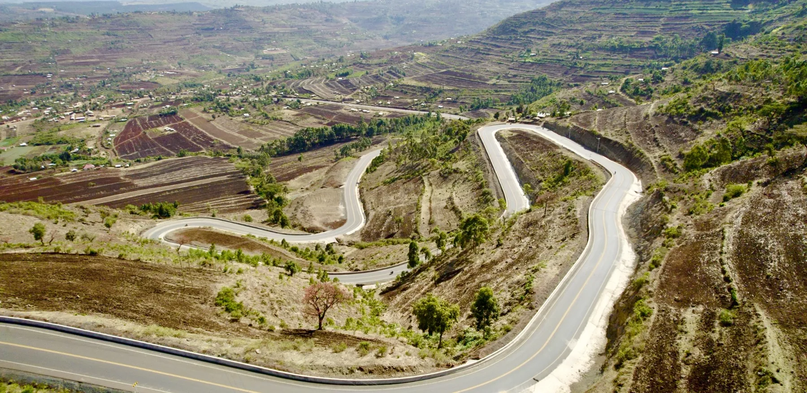

UGANDA TRANSPORT / GIS STUDIO
See how Uganda moves.
Explore the network.
Explore mapped roads, structures, traffic stations, ferry crossings, aviation sites, incidents and freight facilities. Each view identifies the mapped features available here without presenting a partial map as a national total.
TRANSPORT GIS
Interactive map and tables
Loading mapped roads
Explore network
Filters update the map and charts together.
ROAD LINES
National paved roads
DUCAR paved roads
National unpaved roads
DUCAR unpaved roads
Community access roads
ROADS-Mapped road length (km)Search and charts use the mapped subset.
Mapped feature counts
LIVE ANALYSIS
Patterns in the mapped roads
All mapped roads
Condition
Mapped length by condition (km)Sub-region
Mapped length (km)Road class
Mapped length (km)Traffic coverage
Mapped length with AADT (km)AADT availability is shown by road length. Its measurement method is not confirmed here.
All road charts show mapped kilometres and respond to the filters. Missing values stay distinct from zero. This map is a subset, not the complete governed network.